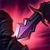
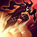
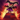
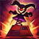
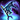
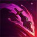
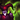
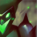

.jpg)

El bufon Siniestro
SHACO
Lore
Creado hace mucho tiempo como un juguete para un solitario príncipe, la marioneta encantada Shaco ahora se deleita con la matanza y el caos. Corrompido por una oscura magia y la pérdida de su querido dueño, la que alguna vez fue una gentil marioneta ahora encuentra placer en la miseria de las pobres almas que atormenta. Usa juguetes y trucos simples con letal eficacia, y cree que los resultados de sus sangrientos "juegos" son divertidos. Para los que escuchan una siniestra carcajada en la mitad de la noche, podría ser que el Bufón Siniestro los marcó como sus próximos juguetes.
Bufón Siniestro
Muchos dirían que la muerte no es divertida. Y no lo es... a menos que seas Shaco, en cuyo caso es hilarante. Es el primer cómico homicida perfectamente funcional de Valoran: bromea hasta que alguien muere, y luego, ríe. Llegó a ser conocido como el Bufón Siniestro, y es todo un enigma. No hay un consenso sobre de dónde viene y Shaco nunca ofrece detalles acerca de sí mismo. Existe la creencia popular de que Shaco no es de Runaterra, sino que es un ente invocado desde un mundo oscuro y retorcido. Otros opinan que es la encarnación demoníaca de los oscuros instintos humanos, y que por tanto es imposible razonar con él. La creencia más plausible es que Shaco es un asesino a sueldo al que se le deja a sus anchas lunáticas hasta que sus servicios vuelven a ser necesarios. No se puede negar que Shaco ha demostrado ser un astuto individuo que elude a la autoridad cada vez que van a buscarlo para interrogarlo sobre algunos terribles crímenes atroces. Aunque esos rumores parecen dar la razón a los habitantes nativos de Valoran, resulta inimaginable que un personaje tan amenazador pueda seguir libre.
Sea cual sea su verdadera historia, Shaco es una figura aterradora y evasiva que suele verse en los lugares donde la locura reina sin límites.
Habilidades
Puñalada en la Espalda
ENFRIAMIENTO EN EL OBJETIVO: 3

PASIVA: Los ataques básicos de Shaco infligen 20 − 35 (según el nivel) (+ 15% DA adicional) de  daño físico adicional al golpear una unidad que no sea una estructura por detrás. Este daño puede causar daño crítico.
daño físico adicional al golpear una unidad que no sea una estructura por detrás. Este daño puede causar daño crítico.
Puñalada en la Espalda no puede ocurrir en el mismo objetivo más de una vez cada pocos segundos.
Engaño
ALCANCE AL OBJETIVO: 400 COSTO: 60 DE MANÁ ENFRIAMIENTO: 16 / 15.5 / 15 / 14.5 / 14

ACTIVA: Después de 0.125 segundos de retraso, Shaco parpadea a la ubicación de destino, convirtiéndose temporalmente en invisible durante unos segundos.
Después de salir de la invisibilidad, su siguiente ataque básico en 0.25 segundos inflige daño físico adicional y en 2.5 segundos reduce el enfriamiento de Engaño en 2.5 segundos.
La invisibilidad de Engaño no se elimina cuando Shaco lanza Alucinación, mientras lanza  Caja Sorpresa provoca que brille sin eliminarla.
Caja Sorpresa
ALCANCE AL OBJETIVO: 425 COSTO: 50 / 55 / 60 / 65 / 70 DE MANÁENFRIAMIENTO: 16 RADIO DE DETECCIÓN: 300

ACTIVA: Shaco invoca a una Caja Sorpresa en la ubicación de destino, con una duración de hasta 40 (+ 5% PH) segundos. La caja se arma después de un retraso de 2 segundos, volviéndose oculta. La caja es invulnerable y  inalcanzable para los enemigos mientras estás en sigilo.
Al activar la caja asustará a los enemigos cercanos durante 2 segundos, reducido contra campeones, que también son enraizados durante 0.5 segundos. Además de hacer que giren y huyan por un tiempo, durante el cual tiene una velocidad de movimiento estática de 100.
Una vez activada, la caja comenzará a disparar automáticamente cada 0.5 segundos a todos los enemigos cercanos visibles, causando daño mágico con cada ataque, aumentado contra monstruos y reducido en un 50% contra estructuras. Si la caja ataca solo a una unidad, inflige un daño mayor.
Veneno de Doble Filo
ALCANCE AL OBJETIVO: 625 COSTO: 50 / 55 / 60 / 65 / 70 DE MANÁ ENFRIAMIENTO: 8

PASIVA: Los ataques básicos de Shaco ralentizan a los enemigos durante 2 segundos, mientras que Veneno de Doble Filo está fuera de enfriamiento.
ACTIVA: Shaco lanza una daga al enemigo objetivo,
ralentizándolo durante 3 segundos e infligiendo
daño físico, incrementado en 0% − 50% (según el nivel).
Alucinación
RADIO DE SUJECIÓN: 1125COSTO: 100 DE MANÁ ENFRIAMIENTO: 100 / 90 / 80
PRIMER LANZAMIENTO: Shaco se  desvanece durante 0.5 segundos y y luego Flash.png parpadea en la dirección objetivo mientras crea una Alucinación de sí mismo que Flash.png parpadea en la dirección opuesta, permaneciendo dentro de su alcance como una unidad convocada controlable por hasta 18 segundos.
SEGUNDO LANZAMIENTO: Mientras la Alucinación está activa, se puede usar Alucinación para moverla a la ubicación de destino
Cuando la Alucinación muere o expira, explota, infligiendo daño mágico en un área de efecto y genera tres mini cajas. Las tres cajas permanecen en el campo de batalla 6 segundos, comparten vida y se activan juntas, aterrorizando enemigos cercanos durante 0.75 segundos.
Skins